MAP Protocol新闻、进展、活动
【20240422】
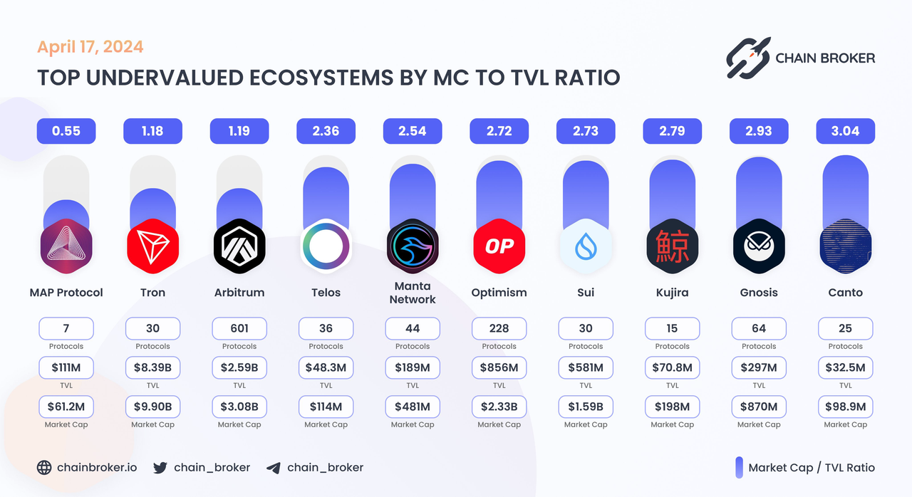
6:44 AM · Feb 8, 2024 想象一下， $MAP 协议就像是加密世界里的瑞士军刀，一个让比特币不再只是自己玩自己的那个老大哥。$MAP是一座神奇的桥梁，把各种不同的区块链连接起来，让它们能够跨过虚拟的大河，互相探访，交换信息，就像是邻居间的友好小聚。如果你想实现跨链互操作，$MAP就是你的解决方案。 我们来聊聊区块链到底是什么。想象一下，一个由全球数以万计的计算机节点组成的巨大账本，这就是区块链。它就像一本永远也填不满的魔法日记，每完成一笔交易，就会记录下来，并且是永久性的——因为这本日记的橡皮擦坏了，所以你写下的每一件事都无法更改。这种不可篡改的特性是区块链的核心，保障了每一笔交易都是公开、透明的。 而 $MAP 协议，它不满足于让比特币单独占有这种魔法日记的荣耀，它的目标是让所有区块链都能参与到这个盛大的派对中来。通过其二层网络和点对点的全链互操作技术，各种区块链就能像有了宇宙翻译机一样，相互理解、沟通。 MAP的协议层，就像是一个多才多艺的画家，在各种区块链上绘制出彩色的跨链图景。然后，它的MAP全链服务层（MOS）就像是为这些艺术品建立了一个画廊，邀请世人来欣赏。至于应用层，那就是画廊里的每一幅画，每个dApp和服务都是独特的艺术创作。 谈到MAP协议的特点，就好比是在讲述一个超级英雄的故事。它不仅让不同的区块链可以互相理解，还利用比特币这个加密界的超级英雄的力量，加强了整个网络的安全。最酷的是，它完全不依赖任何中间方。在$MAP的世界里，我们只信任代码，因为代码是公正、透明、不可更改的。 想象一下，未来的区块链世界，所有链条通过MAP紧密相连，无论是EVM还是非EVM链，都能自由交流。这不仅是技术革命，更是向整个加密世界开启了一扇通往互联互通、充满无限可能的大门。$MAP的路线图，正是这个未来世界的导航图，引领我们走向一个更开放、更互联的明天。 所以，当有人问你 $MAP 是什么，你可以告诉他们，这不仅仅是一个项目，这是加密世界的未来，是一个让所有区块链无障碍沟通、共享未来的梦想。
BTC生态发展,是铭文之后,大家拥抱价值和成长的新风向.各机构对BTC生态发展都投入了巨大的期盼,核心原因在于24年BTC减半后,矿工收益,为了维护BTC网络安全,BTC生态不可或缺(手续费) 未来BTC作为潜在10万亿俱乐部成员,生态的繁荣,想象空间巨大,千亿刚起步.今天介绍一家专注BTC二层的项目: @MapProtocol
成熟的生态应用： 1. @brc20roup ( #ROUP)：BTC L1到L2双向跨链桥； 采用 #MAP 推出的BRC201协议进行跨链，极大提升了比特币生态的流动性，实现了万链资产在L1与L2之间的高效流通，为用户节省100倍的GAS。 #ROUP 致力于比特币生态效率和经济性的提升，而且还保证了用户资产的安全性。
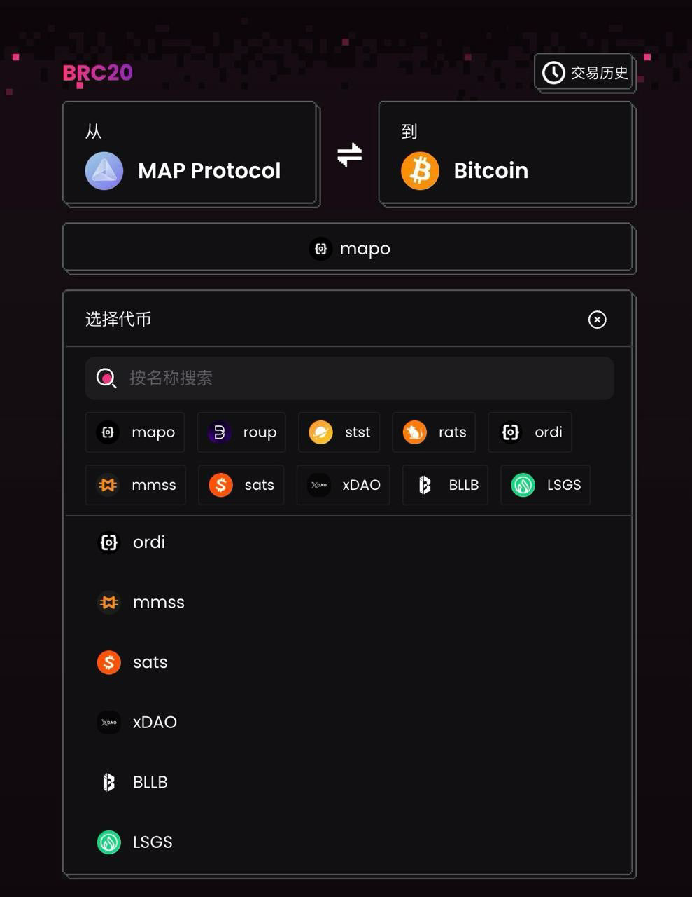
HiveSwap TVL 美元
比特币 L2 MAP Protocol TVL 此前已突破 1 亿美元，现已成功发射超过 20 个比特币二层项目 - 深潮TechFlow (techflowpost.com)
比特币 L2 MAP Protocol 上已成功发射超过 20 个比特币二层项目，TVL 已突破 1 亿美元_腾讯新闻 (qq.com)
我们相信市场参与者越多越好。然而，一些朋友坚持认为我们必须讨论 #BitcoinL2 @MapProtocol 的唯一性，否则考虑处理$MAP。我们不情愿地觉得有必要说出来，强调我们的观点是真实的，并不是想攻击其他参与者。 首先，在最近发布的比特币L2解决方案中，90%甚至没有启动测试网，或者他们的代码很难找到。 其次，99.99%几乎没有生态系统。 相比之下, 首先，MAP Protocol拥有全球独有的ZK-Lightclient技术，并且已经开源。https://github.com/mapprotocol/zkmapoAdditionally…其次，MAP协议有一个完善的生态系统: 1-2层跨链桥 $ROUP(4000个持有者)。 第二层铭文交易市场 $stst(2500个持有者)。 第二层流动性池互换http://hiveswap.io (TVL 2M）。 基于ZK-lightclient的跨链聚合器交换http://butterswap.io将主流链与比特币的第二层生态系统(TVL 4M)连接起来。 *第二层开发者铭文公平铭文平台 @Less_Gas (500万美元，3万代币持有者)，已有20多个项目公平铭文在MAP协议上发行或即将发行，如 @memever_btc @EEAA_Community @cheers_land @MapProtocol 协议总TVL超过1亿美元(截至1月10日)。 我们必须分享这一点，无意贬低别人，我们希望大家共同努力，建立一个伟大的比特币生态系统。
优秀的投资人与合作伙伴： #MAP 战略投资:水滴资本,香港上市公司蓝港互动(http://08267.HK),LK Venture,DWF,Bitrise Capital,Alpha Token Capital,Ticker Capital 重要合作:Trust Wallet,Babylon,Conflux,Klaytn,NEAR,Alchemy Pay, Particle,Recharge,Moledao,谷歌云,阿里云Cloud为技术伙伴.
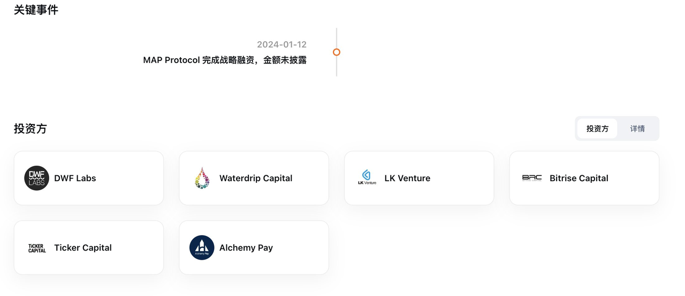
链上数据发展迅猛： 1.目前 MAP Protocol 链上地址超过60万，且持续稳定增长。 2. @MapProtocol TVL突破1亿美金，下一个目标是在TVL上超越 #Stacks，成为 #BTC L2上排名第一的基础设施，这个目标将很快实现！
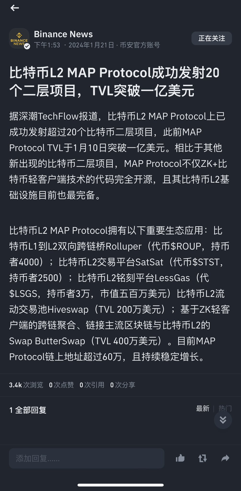
MAP 估值情况： 价格：0.0249 MC市值：5900万美金 FDV市值：2.4亿美金 相较于竞品 #STX 动辄 20亿美金的市值， #MAP 无疑潜力巨大。 与此同时，整个 #BRC20 赛道市值，当前仅仅23亿美金，2025年成就千亿赛道，指日可待。 #MAP 无论在 #BRC20 生态发展还是BTC L2基础设施，都潜力巨大，百倍可期！
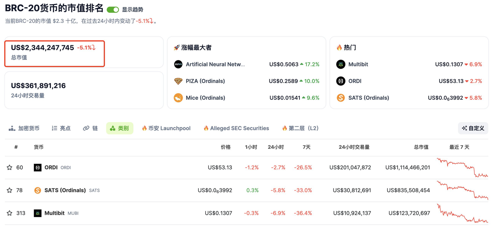
个人一些看法： 1.最近创始人 @Jmapprotocol 正在考虑开放 #MAP BTCL2组件功能,以全力支持开发者免费创建个性化的BTC二层. 这让我想起来马斯克开放特斯拉专利,特斯拉使命:加速世界向可持续能源的转变. 而 James正在为BTC走向世界而奉献,这种格局让人钦佩,我愿意为此下注.
Breaking Trend : #BitcoinL2 @MapProtocol is considering opening up BitcoinL2 capabilities!!! Allowing all developers to use its components to create their own layer2s for FREE. In return for this offering, all Bitcoin layer2s created using these components must adopt MAP Protocol's peer-to-peer crosschain ability powered by ZK-lightclient. With this, all #BitcoinL2s will be interconnected by MAP Protocol.
2.技术成熟度+较低估值 #MAP 项目历时近5年开发,技术成熟+团队稳定,代码更新平稳(如图) 目前已有比特币L1->L2 跨链(ROUP)到L2 项目发射(LSGS)、交易平台 (STST)、流动池交易(Hiveswap)、基于 ZK-lightclient 的 Swap(ButterSwap) 等重点生态应用. 目前估值仅仅5900万美金,完全低估,中期看10亿美金.
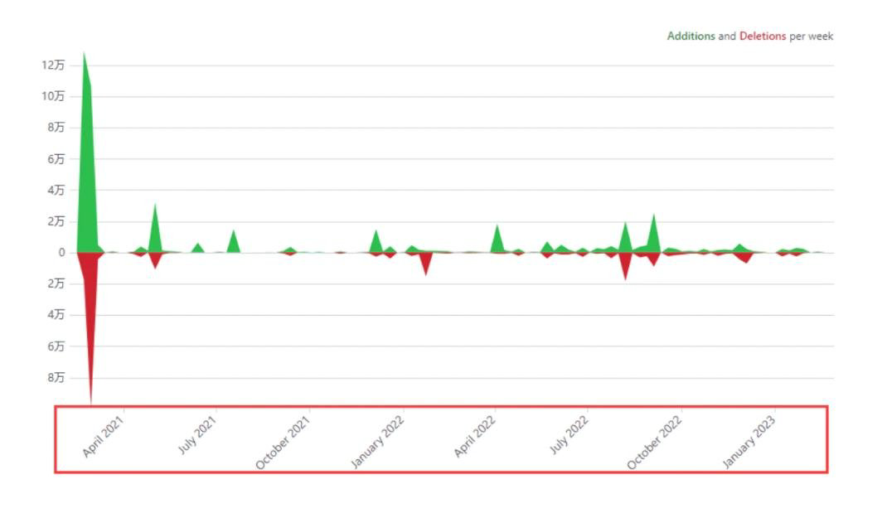
全链时代的引领者 MAP协议的深度探索 在区块链技术迅猛发展的当下，全链时代的概念成为现实。这个时代预示着不同区块链平台间深度的互操作性和整合。MAP协议，作为这一时代的缔造者，展现了其在全链领域的创新和实用价值。 五年研发成果MAP协议的创新之旅 根据MAP协议的开发者文档，MAP协议是一种全链层的Web3跨链互操作协议，旨在赋能Web3应用在全链未来中蓬勃发展。该协议构建在轻客户端（Light-Client）和零知识证明（Zero-Knowledge）技术之上，提供安全可靠的全链基础设施。MAP协议的核心要素包括： 1. 全链覆盖：可扩展且去中心化的MAP中继链，支持EVM、非EVM和BTC链的连接。 2. 自验证轻客户端：利用轻客户端技术验证所有跨链交易，确保结果明确无误。 3. 先进的零知识技术：使用零知识证明技术优化和加速验证过程，降低交易成本。 4. 全面的SDKs：MAP协议服务（MOS）和SDKs为全链应用提供内置的互操作功能。 MAP协议致力于解决跨链桥易出错的基本问题，并追求更大的愿景：赋能Web3应用在全链未来中蓬勃发展。利用MAP协议基础设施构建的任何Dapp自动继承MAP协议的全链特性，无需开发人员处理容易出错的跨链通信 https://docs.mapprotocol.io 因此，在文章中可以强调MAP协议完整继承了比特币的安全性，并通过其先进的技术栈和全链覆盖策略，为区块链技术的未来发展增加了新的动力。 MAP协议旨在解决比特币网络及其他区块链面临的可扩展性和互操作性挑战。它结合轻客户端技术和零知识证明（ZKP）技术，不仅提高了交易速度，减少了网络负载，而且完整继承了比特币的安全性。这种结合提供了一种既安全又高效的跨链交易解决方案。 全链时代与MAP协议的融合 在全链时代背景下，MAP协议担当重要角色。它不仅提升了传统区块链的性能，还通过其四大核心要素——全链覆盖、自验证轻客户端、先进的零知识技术和全面的SDKs——为不同区块链的互操作性提供了实用方案。这些创新是全链时代理念的实际体现，通过技术创新和智能集成，推动了不同区块链系统的协同发展。 结论 作为全链时代的重要缔造者和推动者，MAP协议不仅在技术创新方面处于领先地位，还为区块链技术的未来发展注入了新动力。通过不断的技术创新和智能集成，MAP协议正帮助构建一个更加互联互通、安全可靠、用户友好的区块链新时代。
History and Future strategy --- @MapProtocol As $MAPO gets listed on both #Gate and #Bitget, I'd like to take this opportunity to share @MapProtocol 's upcoming strategy and briefly look back at our history. Many people have been asking, with nearly 5 years since MAPO's inception, why has it been listed on so few exchanges? Others question, with some Layer 2s boasting a TVL of over $2 billion, why does MAP have such a low TVL? And why haven't the prices of tokens in our ecosystem taken off? Understanding the past and the future is crucial to grasp the full picture of a project. In addressing why MAP has been listed on a limited number of exchanges, I want to first inform the community about its history. Despite being nearly 5 years old, MAPO spent the first four years in R&D, developing the world's most challenging ZK Lightclient technology, homogenizing different signature and hash algorithms, and solving peer-to-peer cross-chain issues in line with Satoshi Nakamoto's consensus across heterogeneous chains. In an era where many disregard the essence of technology, we, as a group of cryptography enthusiasts, still believe in the power of technology to change the world. Fast food, while tasty and convenient, is not staple food; what humans truly need is well-prepared meals made from quality ingredients. Since the mainnet launch last year, the community has been waiting for the Bitcoin ecosystem to explode, and we were fortunate to see that happen in December. We've always believed that only infrastructures that solve significant technical challenges in the industry with good user data and supreme technology should list on more exchanges to attract more holders. Following the MAP Protocol hype led by Bitcoin developer Luke, we've started treating exchange listings as seriously as technical development and market operations. Today, with both Gate and Bitget announcing $MAPO listings, our dedicated team is working on business negotiations and fulfilling requirements with other medium to large exchanges. The feedback has been promising; we just need to supplement some data, and we believe the outcomes will only get better. On the other hand, in terms of decentralized exchanges, I've been actively encouraging the community to add liquidity of $MAP( $mapo) on HiveSwap and Uniswap, which has resulted in great success. Currently, there's over $5 million in liquidity on decentralized exchanges, with LPs earning $20k USD in fee income daily. Moving forward, the MAPO Foundation will provide incentives, offering additional $MAPO rewards to those who add LP liquidity. I believe the liquidity on decentralized exchanges has the potential to exceed $20 million. At the same time, TVL is a critical metric in the crypto community. MAP Protocol, being a layer-zero of Bitcoin L2s, does not compete with other L2s, nor should it. Therefore, the evaluation of MAP Protocol's TVL is not based on the amount of Bitcoin transferred from the Bitcoin L1,it is Bitcoin L2's land, but rather on the TVL locked through cross-chain interoperability by many partners such as Merlin, B^2, Babylon, etc. (i.e., how much Bitcoin from B^2 is transferred to Merlin by MAP Protocol, how much from Merlin is transferred to #ratschain by map protocol ). The reason there are no data available for this task yet is due to ongoing cross-chain interoperability technical integration and awaiting the official launch of our partners' L2s mainnets. Based on feedback from all parties, I believe the data will be impressive once everything is in place. Within the inscription ecosystem, we have become the world's leading developer- inscription infrastructure. Particularly, the LessGas low-market-cap starter inscription platform has launched projects like FOX2, which saw a 500-fold increase. Moving forward, MAP Protocol will provide even more empowerment and support to LSGS, aiding in the development and market value enhancement of developer inscriptions. On another note, @hiveswap_io and @ButterSwapio , as two significant DeFi platforms, have yet to launch their token distribution and rewards programs. Once they announce the start of these initiatives, I believe the activity on the MAP Protocol chain and its TVL will experience an unforeseeable boost. Meanwhile, we will also provide #bitcoinL2 technology components to any community or organization looking to enter the Bitcoin L2 space. As it's well known, some Bitcoin L2 solutions have utilized Polygon's SDK, which is definitely not suited for Bitcoin tech features and lacks cross-chain functionality. In contrast, the components offered by MAP Protocol are fully equipped and capable of supporting bitcoin features and interoperability, also give 30+ ecosystem dapps to deploy on your bitcoinL2. And the program itself is free of charge. In this strategic development, we have already reached preliminary cooperation with the $Rats community and are making smooth progress, which will bring significant returns to the MAP community. Moreover, other well-known inscription communities and companies have started reaching out to us, hoping to utilize our Bitcoin L2 solutions. I believe that this bull market is just beginning, and there are already hundreds of Bitcoin Layer2s. However, MAP Protocol, as L0 among the many Bitcoin L2s, serves as the gateway for developers and users/capital to enter the Bitcoin ecosystem. It is the foundational infrastructure that enables interconnectivity among these hundreds of L2s. This positioning is unique, and it has already captured the minds of users and gained a first-mover advantage. On the other hand, our technology is unparalleled and is recognized as the holy grail by the tech industry. Therefore, we are not afraid of any competition. Instead, we prefer to move forward towards a brighter future together with the community.
历史与未来战略--- @MapProtocol 随着$MAPO在 #Gate 和 #Bitget，我想借此机会分享一下 @MapProtocol 即将到来的战略，并简要回顾一下我们的历史。很多人都在问，MAPO成立近5年，为什么在这么少的交易所上市？还有人质疑，一些 Layer 2 的 TVL 超过 20 亿美元，为什么 MAP 的 TVL 如此之低？为什么我们生态系统中的代币价格没有起飞？ 了解过去和未来对于掌握项目的全貌至关重要。在解释为什么MAP在有限数量的交易所上市时，我想首先向社区介绍它的历史。尽管成立近 5 年，但 MAPO 在前四年的研发工作中，开发了世界上最具挑战性的 ZK Lightclient 技术，将不同的签名和哈希算法同质化，并根据中本聪在异构链上的共识解决点对点跨链问题。在一个许多人无视技术本质的时代，我们作为一群密码学爱好者，仍然相信技术改变世界的力量。快餐虽然美味方便，但不是主食;人类真正需要的是用优质食材烹制的精心准备的饭菜。 自去年主网启动以来，社区一直在等待比特币生态系统的爆炸式增长，我们很幸运地在 12 月看到这种情况发生。我们一直认为，只有能够解决行业重大技术挑战的基础设施，以及良好的用户数据和卓越的技术，才应该在更多的交易所上市，以吸引更多的持有者。在比特币开发商Luke领导的MAP协议炒作之后，我们开始像对待技术开发和市场运营一样认真对待交易所上市。今天，随着 Gate 和 Bitget 宣布$MAPO上市，我们的专业团队正在与其他大中型交易所进行业务谈判并满足要求。反馈是有希望的;我们只需要补充一些数据，我们相信结果只会变得更好。 另一方面，在去中心化交易所方面，我一直在积极鼓励社区在 HiveSwap 和 Uniswap 上增加 $MAP（$mapo） 的流动性，取得了巨大的成功。目前，去中心化交易所的流动性超过 500 万美元，LP 每天赚取 20 美元的费用收入。展望未来，MAPO基金会将提供激励措施， 为那些增加LP流动性的人提供额外的$MAPO奖励。我相信去中心化交易所的流动性有可能超过2000万美元。 同时，TVL 是加密社区的一个关键指标。MAP协议作为比特币L2的零层，不会与其他L2竞争，也不应该竞争。因此，对 MAP Protocol 的 TVL 的评估不是基于从比特币 L1 转移的比特币数量，而是基于比特币 L2 的土地，而是基于 Merlin、B^2、Babylon 等众多合作伙伴通过跨链互操作锁定的 TVL（即有多少比特币从 B^2 通过 MAP 协议转移到 Merlin， 有多少从 Merlin 转移到 #ratschain 通过 MAP 协议 ）。目前尚无此任务数据的原因是正在进行的跨链互操作性、技术集成，并等待我们合作伙伴的 L2s 主网正式启动。基于反馈 f我相信，一旦一切就绪，数据将令人印象深刻。 在铭文生态系统中，我们已成为世界领先的开发者-铭文基础设施。特别是，LessGas低市值的启动器铭文平台已经启动了FOX2等项目，增长了500倍。展望未来，MAP协议将为LSGS提供更多的赋能和支持，帮助开发者铭文的开发和市场价值提升。 另一方面， @hiveswap_io 和 @ButterSwapio 作为两个重要的 DeFi 平台，尚未推出其代币分配和奖励计划。一旦他们宣布启动这些计划，我相信 MAP 协议链及其 TVL 上的活动将经历不可预见的推动。 同时，我们还将为 任何希望进入比特币L2领域的社区或组织提供 #bitcoinL2 技术组件。众所周知，一些比特币 L2 解决方案使用了 Polygon 的 SDK，这绝对不适合比特币技术功能，并且缺乏跨链功能。相比之下，MAP Protocol 提供的组件设备齐全，能够支持比特币功能和互操作性，还提供了 30+ 个生态系统 dapp 可以部署在您的比特币L2 上。该程序本身是免费的。在这一战略发展中，我们已经与$Rats社区达成了初步合作，并且进展顺利，这将为MAP社区带来可观的回报。此外，其他知名的铭文社区和公司已经开始与我们联系，希望利用我们的比特币 L2 解决方案。 相信这轮牛市才刚刚开始，已经有数百个比特币 Layer2。然而，MAP协议作为众多比特币L2中的L0，是开发者和用户/资本进入比特币生态系统的门户。它是实现数百个 L2 之间互连的基础设施。这种定位是独一无二的，它已经俘获了用户的心，并获得了先发优势。另一方面，我们的技术无与伦比，被科技行业公认为圣杯。因此，我们不惧怕任何竞争。相反，我们更愿意与社区一起迈向更光明的未来。
9:36 PM · Mar 5, 2024
MAP Protocol 九月月报 - Map Protocol Blog
🇰🇷 KBW 2023 – Web3 的未来先锋
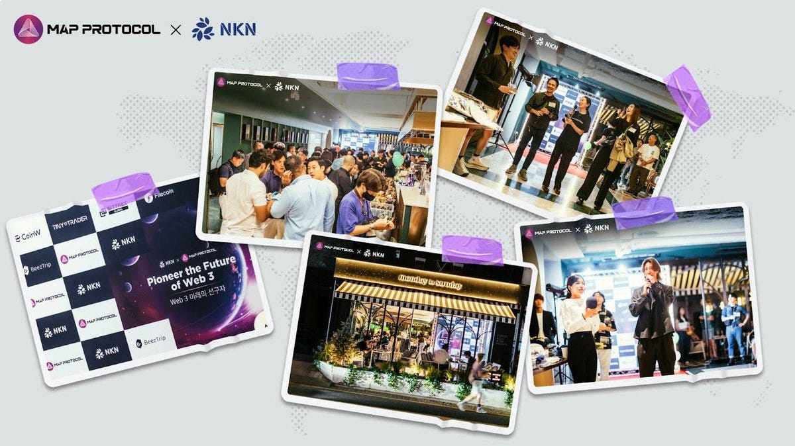
与超过 300 位创新者、行业领袖和区块链建设者一起，MAP Protocol 和 NKN 的 #KBW2023 Web3 的未来之夜取得了巨大的成功。感谢所有使这个夜晚成为可能的人！
FIL Seoul Network Base
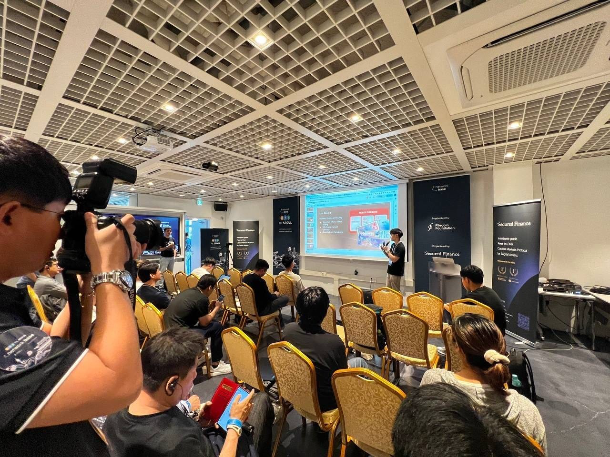
我们的核心开发者 Jason 对 MAP Protocol 的点对点跨链技术在 852DAO 和 omnichain 支付中的创新用途进行了详细的演示。
🙌 合作伙伴关系
MAP Protocol x Klaytn
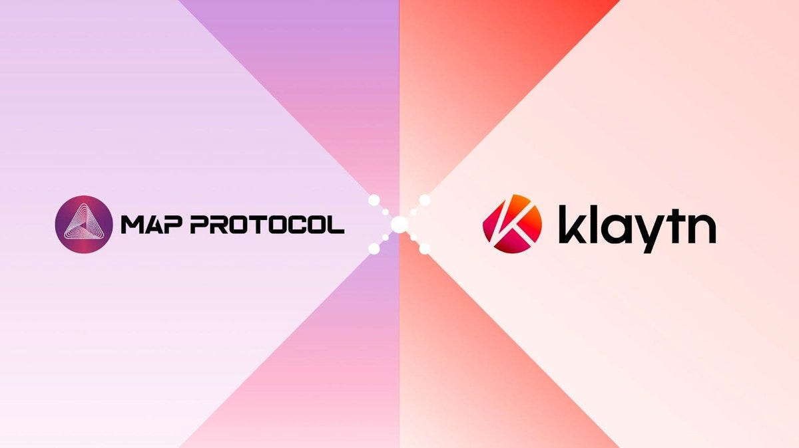
MAP Protocol和Klaytn Foundation，这个推动全球采用韩国著名公共区块链平台Klaytn的非营利实体，宣布建立战略合作伙伴关系，标志着区块链技术领域的重大飞跃。
MAP Protocol x everPay everPay已正式上线$MAP代币。所有$MAP持有者现在可以享受即时交易、无费用和增强的安全性，所有这些都由everPay提供支持。 详情：https://twitter.com/MapProtocol/status/1705135060494807057
MAP Protocol x Vortex
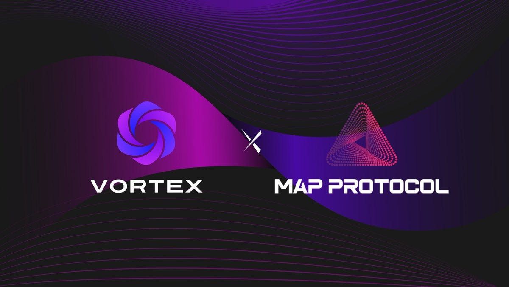
Vortex，基于ZK-SNARk的流动性聚合订单簿，正在加入MAP Protocol的全链生态系统。 详情：https://twitter.com/MapProtocol/status/1698830897800491218 感谢您抽出时间了解我们MAP Protocol社群中最新的动态。为了进行实时交流和及时获取更新，请加入我们充满活力的Telegram社群。
《谷歌云与比特币二层网络合作，开启区块链创新新纪元》谷歌云与比特币第二层网络合作支持区块链创新 谷歌云和 MAP协议形成了一个突破性的合作伙伴关系，推动区块链创新，实现无缝的 Web3末来。 在塑造区块链未来的开创性联盟中，谷歌云和比特币第二层网络 MAP协议联手放大该细分领域的创新。与此同时，今天的声明标志着一个关键时刻，因为这些技术巨头联合起来，推动各种规模的企业以及普通大众的应用程序成为主流。区块链 Google云合作伙伴MAP协议推进区块链创新 之间的合作第二层网络MAP协议和谷歌云标志着区块链进化的一个重大飞跃。MAP协议的跨链通信的巧妙解决方案，以不信任和对等的方式执 行，在EVM和非EVM链之间提供了一个无缝的桥梁。 值得注意的是，这一突破性的功能使资产能够通过其对等轻型客户端和zk网络安全、自由地移动。与此同时，人才和技术的整合，旨在扩大双方的影响力和技术能力。谷歌云，利用其强大的基础设施和安全特性，旨在迎合对区块链技术感兴趣的客户，根据公告.另-方面，MAP Protocol预计将扩大其用户群，并将开发人员吸引到其生态系统中。
Google Cloud Bolsters Blockchain Innovation With Bitcoin Layer-2 Network Partnership (coingape.com)
Google Cloud 通过与比特币第 2 层网络合作支持区块链创新 Google Cloud 和 MAP Protocol 建立了开创性的合作伙伴关系，推动了区块链创新，实现了无缝的 Web3 未来。 12月 29， 2023 在塑造区块链未来的开创性联盟中，谷歌云和比特币第 2 层网络 MAP 协议联手扩大了该领域的创新。与此同时，今天的公告标志着一个关键时刻，因为这些科技巨头联合起来，推动区块链应用成为各种规模企业和公众的主流。 Google Cloud 合作伙伴 MAP 协议推动区块链创新 Layer-2网络MAP协议与Google Cloud之间的合作标志着区块链演进的重大飞跃。MAP Protocol 的跨链通信巧妙解决方案以无需信任和点对点的方式执行，在 EVM 和非 EVM 链之间提供了无缝桥梁。 值得注意的是，这一突破性功能使资产能够通过其点对点轻客户端和 zk 网络安全、自由地移动。同时，此次合作的人才和技术整合旨在扩大双方的影响力和技术能力。 根据公告，谷歌云利用其强大的基础设施和安全功能，旨在迎合对区块链技术感兴趣的客户。另一方面，MAP Protocol 预计将扩大其用户群并吸引开发人员加入其生态系统。 无缝的 Web3 未来 谷歌云代表表达了对合作伙伴关系的热情，强调了其在技术进步中的重要作用。此外，MAP协议的点对点互操作性与谷歌云基础设施的集成被视为一种协同作用，增强了各级开发人员对区块链的可访问性。值得注意的是，此次合作预计将在区块链和云计算的交叉点产生创新的去中心化解决方案。 同时，这种伙伴关系不仅仅是一次性的冒险，而是为持续的进步奠定了基础。在接下来的几个月里，MAP Protocol 计划利用 Google Cloud 的技术来增强 Web3 开发者的体验。 此外，借助 Google Cloud 的强大技术，MAP Protocol 旨在提供支持性和巩固的构建者体验，促进从 Web2 到 Web3 的无缝过渡。值得注意的是，此次合作有望促进 Web3 行业的发展，使全球开发人员更容易获得去中心化区块链技术。
https://twitter.com/web3baoan/status/1764995857374753107
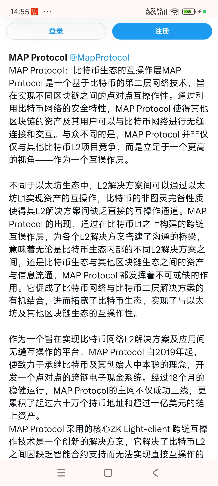
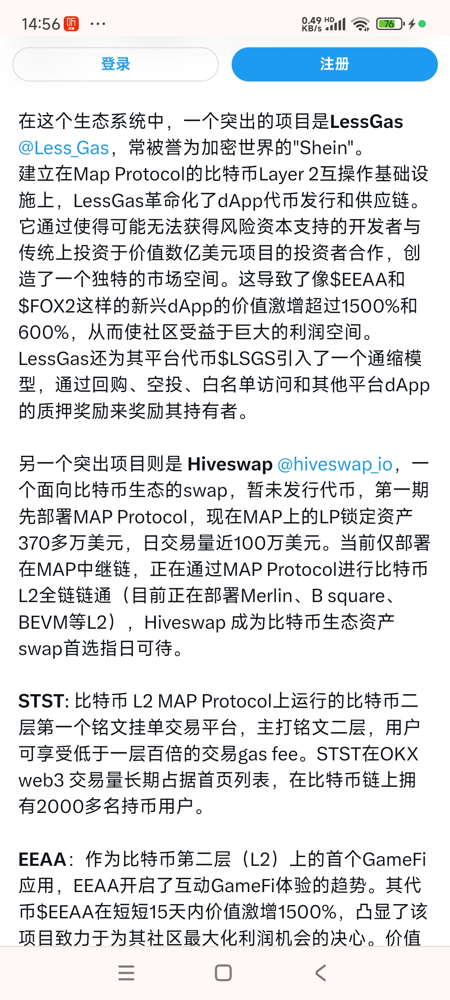
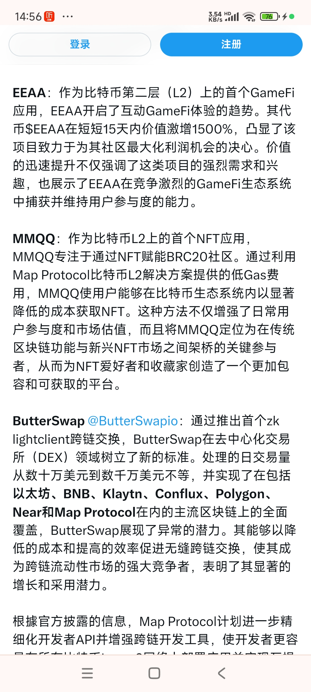
- EEAA: GameFi
- MMQQ: NFT